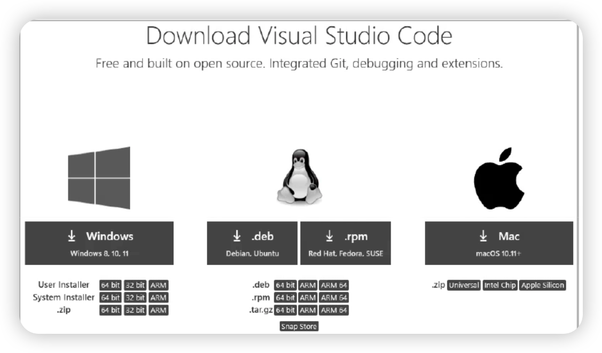
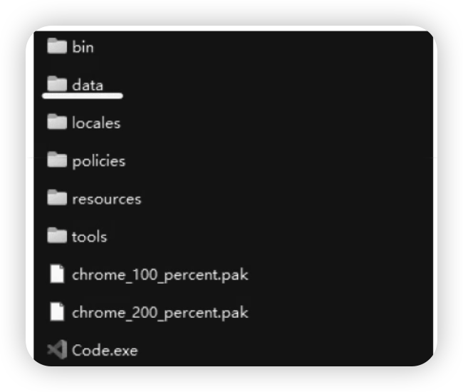
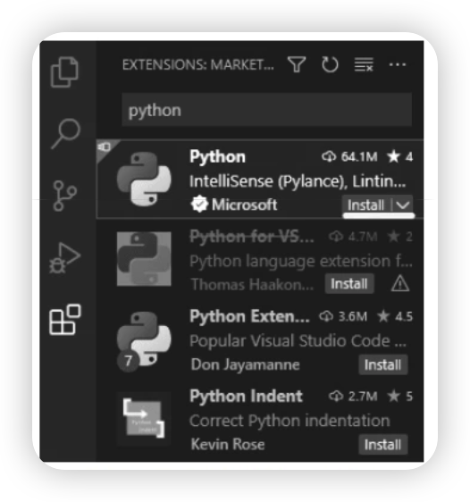
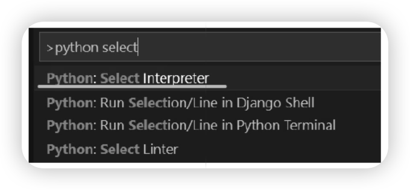
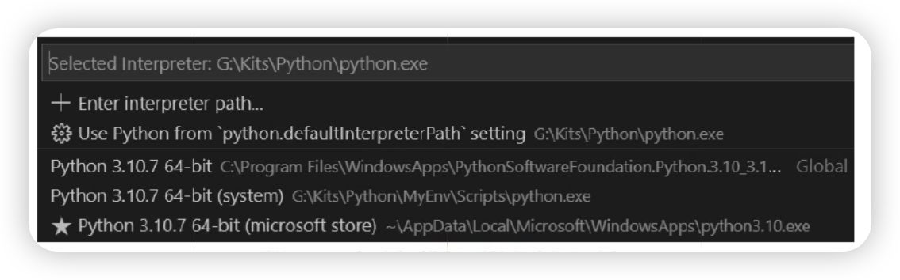
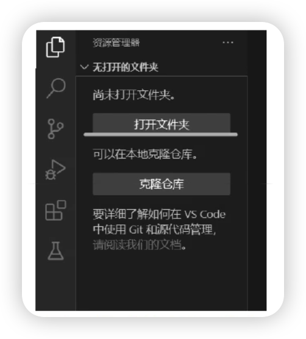
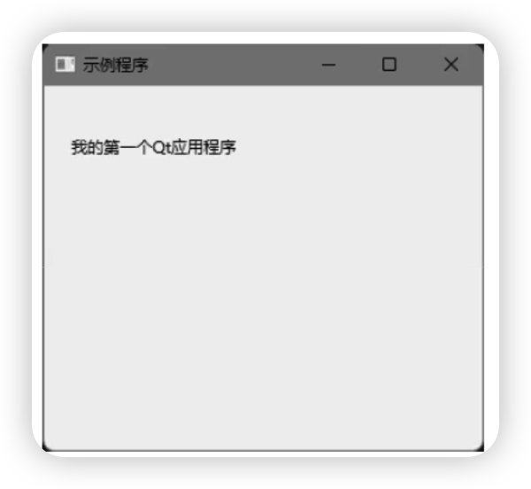

全部章节
第 1 章搭建 PySide 开发环境
- 配置 Python 环境。
- 配置 Visual Studio Code。
- 安装 PySide6。
- 验证开发环境。
配置 Python
Linux 和 macOS 系统默认是带有 Python 环境的，需要时进行更新即可。Windows 系统默认不带 Python 环境，需要手动安装。
Windows 系统可以选择下面任意一种安装方式。
- 从官方网站下载安装包进行安装。
- 从 Windows 应用商店中搜索 Python，直接单击“获取”或“安装”按钮即可，安装过程会自动完成。此方法比较简单。
- 从官方网站下载嵌入式版本（Windows embeddable package），下载后得到一个 .zip 文件，直接将其解压到指定目录即可使用。此方法得到的 Python 环境体积较小，方便放到 U 盘或移动硬盘中，可以在其他计算机上使用 Python 了。
需要注意的是，嵌入式版本是不包含说明文档和 pip 等组件的，并且需要手动配置。具体步骤如下。
- 在官方网站下载嵌入式压缩包。
- 将压缩包解压到指定的目录下，如
D:\Python。 - 使用任意文本编辑器（如记事本）打开
python<版本号>._pth文件。假设 Python 版本是 3.10，那么该文件的名称为python310._pth。此文件的作用是配置 Python 搜索 package 的路径。默认配置了两个版本号.zip 和当前目录搜索。而用 pip 安装的第三方 package 会位于Lib\site-packages目录下。为了能让 Python 查找到这些目录，需要将python<版本号>._pth文件的最后一行取消注释（删除import site前面的“#”）。
保存并关闭文件。下载 get-pip.py 文件，然后放到已解压的嵌入式 Python 的根目录下，如 D:\Python。执行 get-pip.py。
配置 Visual Studio Code
Visual Studio Code（简称 VS Code）是一款非常好用的代码编辑器，想要什么功能，安装相应的扩展即可。
VS Code 支持 Windows、Linux、macOS 三大操作系统，如图 1-1 所示。

Windows
在 Windows 系统上，可以选择三种安装方案。
- User Installer：安装后只供当前登录系统的用户可以使用。
- System Installer：安装为系统级别，登录本台计算机的用户都可以使用。
- .zip：仅下载一个压缩包文件，可以解压到任意目录下使用，不需要安装。这种方案最为灵活，将其解压放到 U 盘或移动硬盘中，就可以实现在任意计算机上使用 VS Code 了。
Linux
Linux 系统主要是三种文件格式。
- .deb：Debian、Ubuntu 相关发行版中的安装包。
- .rpm：SUSE、Red Hat 等发行版中的安装包。
- .tar.gz：一个压缩包文件，可以将其解压到任意目录下使用，无须安装。
macOS
下载后是一个 .zip 压缩包文件，一般可以选择 Universal 版本，兼容多种 CPU 架构。
VS Code 配置用户数据目录
如果将 VS Code 存放于 U 盘或移动硬盘中，人们不希望使用用户数据目录，包括用户的配置文件、已安装的扩展等。这样有利于携带和通用，通常做法是在 VS Code 所在的目录下创建一个名为 data 的目录。VS Code 会自动使用该目录来保存设置和扩展，使用的目录和文件会自动创建。
当更新 VS Code 时，可以将除 data 目录和其他目录和文件删除，再把新版本的 zip 文件解压过来覆盖即可，或将新版本 VS Code 的 zip 文件解压到另外一个目录下，再将旧版本目录中的 data 目录复制过去。总而言之，无论采用何种方法更新 VS Code，只要保留 data 目录即可。
安装 Python 扩展
得益于各种各样的扩展，VS Code 能编写许多编程语言的代码，如 C++、C#、Java、Go 等。使用 PySide 编写 Qt 应用程序需要 Python 语言的支持。因此，在配置好 VS Code 后，需要安装两个扩展：简体中文语言包和 Python 语言支持。
运行 VS Code 后，在主界面窗口左侧找到“扩展”面板按钮，单击它，或按快捷键【Ctrl+Shift+X】能打开扩展管理面板。在搜索框中输入 python 开始搜索，在搜索结果列表中找到微软公司官方提供的 Python 扩展，最后单击“安装”或 Install 按钮即可完成安装，如图 1-3 所示。


使用同样的方法搜索并安装 Chinese (Simplified) 扩展。重启 VS Code 后，界面文本就会显示为简体中文。若希望将界面文本改为繁体中文，可以安装 Chinese (Traditional) 扩展。
创建 Python 虚拟环境（可选）
在使用开发过程中，开发人员经常需要安装各种各样的第三方库，难免会出现不同库之间，或者同一个库的不同版本之间产生冲突。为了让特定的项目能够有一个纯净的代码环境，Python 虚拟环境就派上用场了。
在安装 PySide 之前，建议创建一个专用于 Qt 开发的虚拟环境。假设虚拟环境的存放路径为 F:\MyEnv，执行以下命令即可创建新的虚拟环境。
执行完上述命令后，在 MyEnv 目录下会生成一些 Python 的基础文件（虚拟环境依赖的基础库）。要启用虚拟环境，可以运行 MyEnv\Scripts 目录下的 activate 脚本。要退出虚拟环境，可以运行 deactivate 脚本。这些脚本在 Linux 系统上没有文件后缀的，而在 Windows 上有 .bat 和 .ps1 两种后缀。
把 Python 可执行文件所在的目录添加到 PATH 环境变量中。如果想长期保存，可以使用 setx 命令。
本书推荐通过 Windows 应用商店来安装 Python，既免去了手动配置时的麻烦和可能造成的错误。
上方 bat 和 ps1 都是批处理文件，ps1 是 PowerShell 脚本。调用时运行任意一种格式的脚本即可。
为了让启动 Python 虚拟环境和 VS Code 变得更方便，可以在桌面上新建一个批处理文件（假设命名为“启动 PySide 开发环境”，文件名不包含双引号），输入以下命令并保存。
批处理文件示例
第一行关闭命令回显；第二行调用 activate.bat 批处理文件启动 Python 虚拟环境；第三行启动 VS Code；第四行的 exit 语句表示退出当前批处理文件。
当需要开启 PySide 开发环境时，直接运行上述批处理文件就可以了。
创建 Python 虚拟环境是可选的，在 Python 主体环境中也可以安装 PySide。
安装 PySide6 库
执行以下命令将自动安装 PySide6。
如果安装失败，可以多试几次。经多次尝试仍无法安装，或下载速度很慢，可以使用清华大学的开源镜像服务器，命令如下：
在 VS Code 中选择 Python 解释器
当本地计算机上安装了多个 Python 版本，或创建了虚拟环境后，就会存在多个 Python 解释器。因此，在使用 VS Code 编写代码前应当选择一个合适的解释器。在 VS Code 主界面上按快捷键【Ctrl+Shift+P】调出命令面板，在搜索框中输入 python select，在弹出的提示列表中单击选择 Select Interpreter（选择解释器），如图 1-4 所示。

在随后打开的解释器列表中选择一个，如图 1-5 所示。注意，如果使用虚拟环境，一定要选择位于虚拟环境路径中的解释器。

验证开发环境是否搭建成功
至此，所有准备工作已完成。接下来需要验证开发环境是否正常可用。
在 VS Code 界面的左侧工具栏中单击“资源管理器”面板，或者调用快捷键【Ctrl+Shift+E】。
在“资源管理器”面板上单击“打开文件夹”按钮（如图 1-6 所示），选择一个目录，该目录随即用来存放代码文件（Python 脚本）。
单击“资源管理器”面板上的“新建文件”按钮，新建文件，命名为 app.py。
在 app.py 文件中输入以下代码（代码输入完成后记得要保存）：
app.py
上面代码创建了一个简单的 Qt 应用程序，包含一个窗口，窗口上放置一个标签组件。此代码仅用于测试开发环境是否搭建成功，因此读者暂时不需要关注每行代码的含义，有个大概的理解思路即可，本书后续的章节会详细介绍 Qt 应用程序的执行过程。
执行以下命令，并能看到如图 1-7 所示的应用程序主窗口，就说明开发环境正常使用。

